Application¶
The following sections showcase the different pages and features of LionGuard Pro Max.
1. Home Page¶
The homepage serves as a central hub where users can learn about the application's goals and key features. It includes a left-side navigation bar with buttons for Home, Classify Text, and Analysis, allowing for seamless navigation throughout the application.
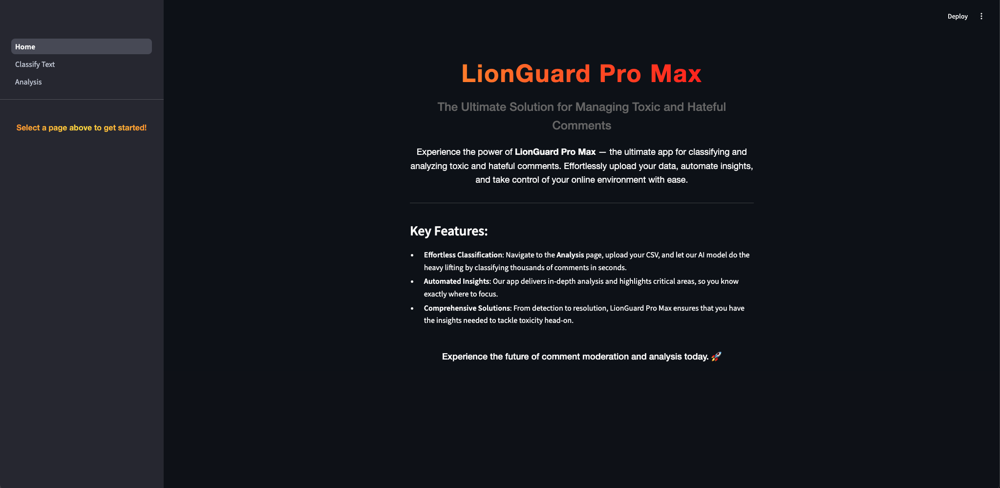
2. Classify Text Page¶
The Classify Text page lets users classify text manually or by uploading a CSV for batch testing. Users can also view past classifications and learn more about the model used.
2.1 Classifying Text by Manual Classification¶
The Manual Classification tab on the Classify Text page allows users to type a comment into the chatbox and click the Classify button to manually classify it.
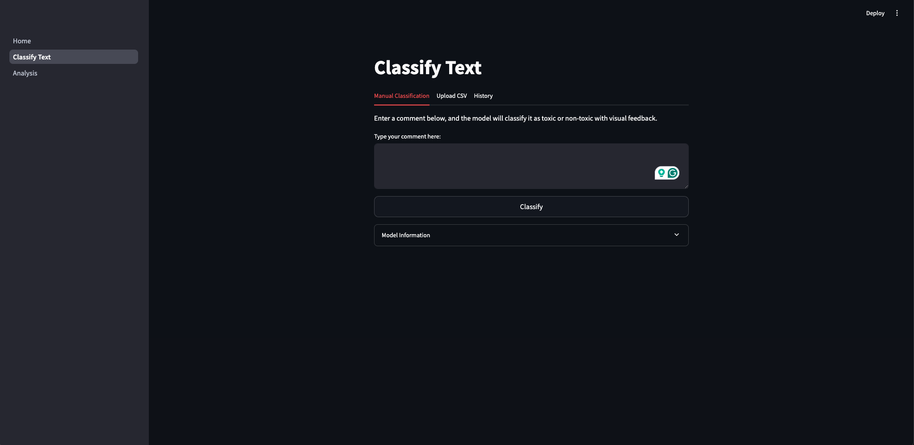
After clicking the Classify button, the predicted label will appear, thus showing the Language Intensity Classification of the comment. An example is shown below:
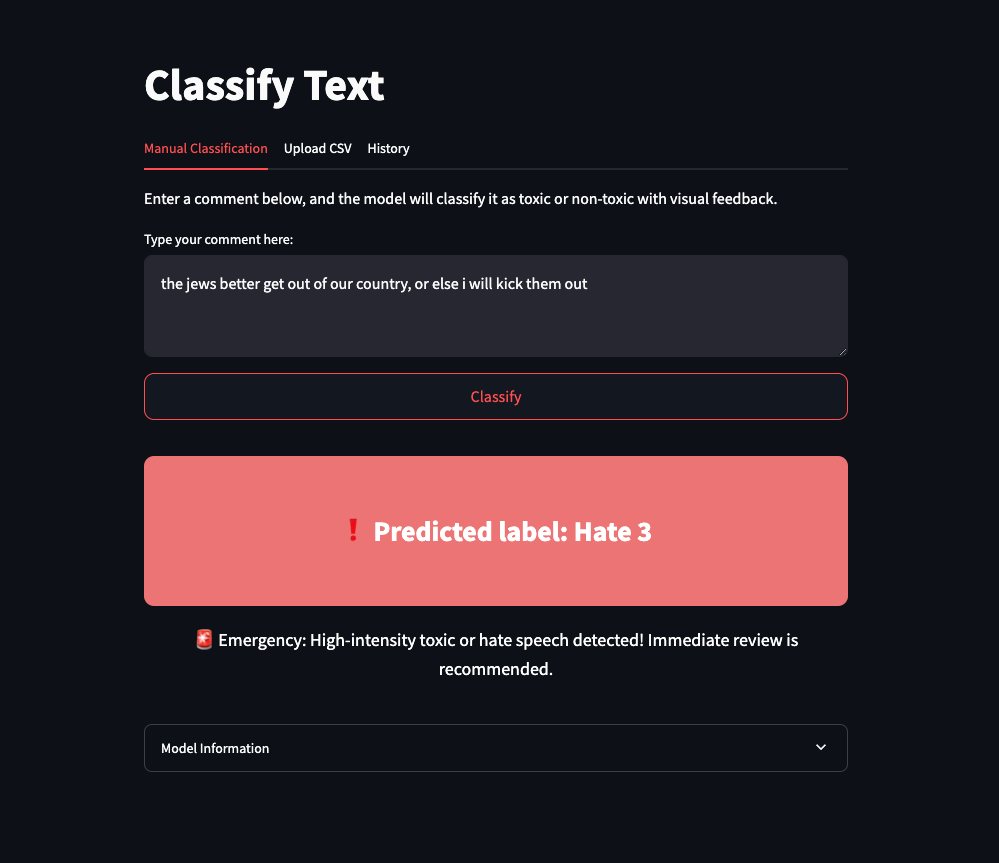
2.2 Classifying Text by Uploading CSV¶
In addition to single-comment classification, users can test multiple comments by uploading a CSV file via the Upload CSV tab. Simply click the Browse files button to select a file from your device.
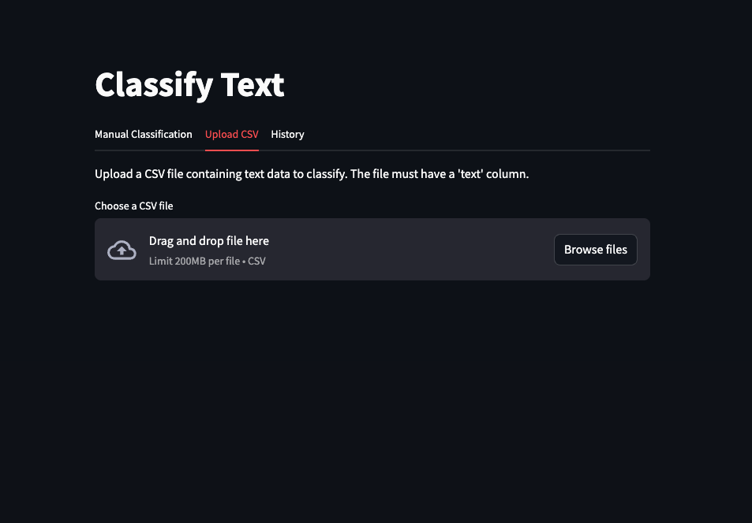
2.3 History Tab¶
Clicking into the History tab enables users to view their past classifications, allowing them to track and review their work.
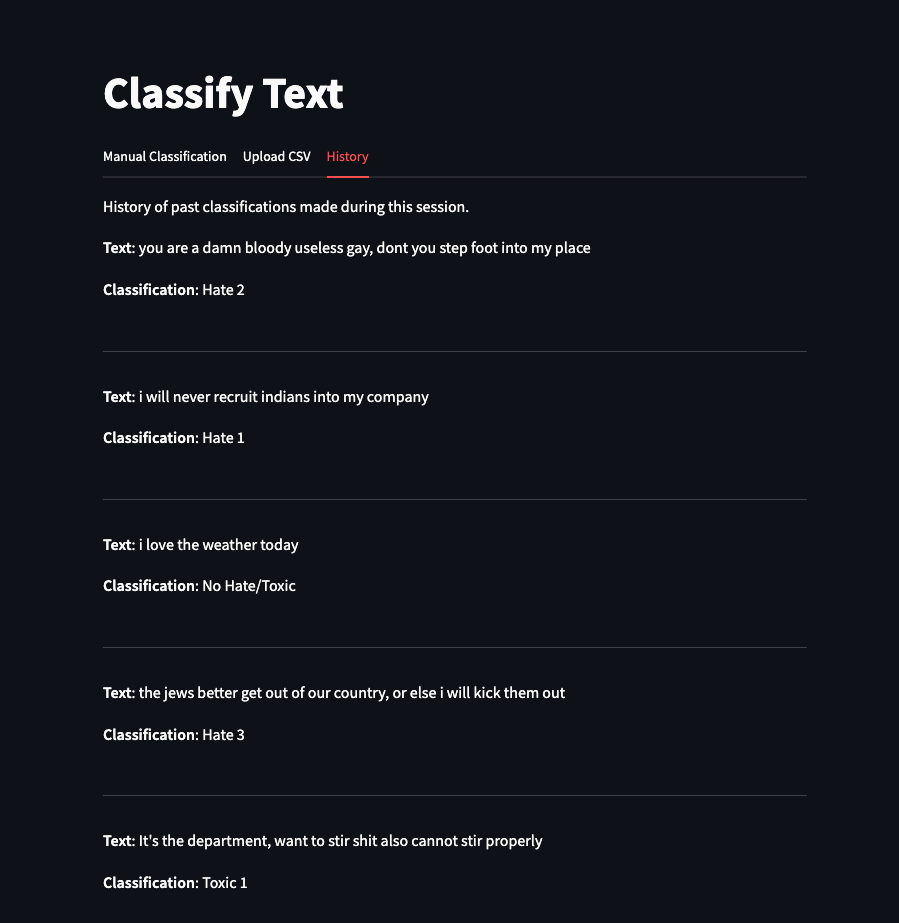
2.4 Model Information Section¶
The Model Information section offers users detailed insights into the model powering the application, including its fine-tuning process and definitions for each of the 7 classification categories. This helps users understand how the model interprets and categorizes data, enabling more informed interpretation of outputs and confidence in the technology.
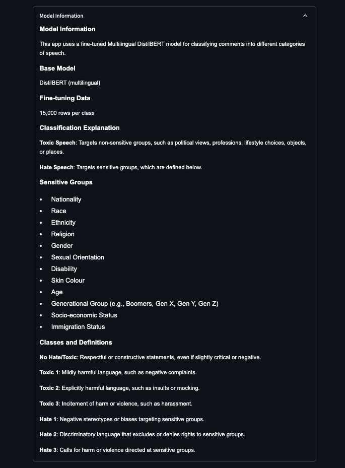
3. Analysis Page¶
The Analysis page presents a summary of our data analysis on hate and toxic speech in Singapore-related subreddits from 2020 to 2023. This analysis identifies trends in the frequency and intensity of such language, highlighting significant shifts over time and offering insights into the prevalence and nature of online hate speech and toxicity within the Singaporean context.
3.1 Overview Tab¶
The Overview tab welcomes users to the analysis dashboard and provides a brief guide to the various tabs and their functions.
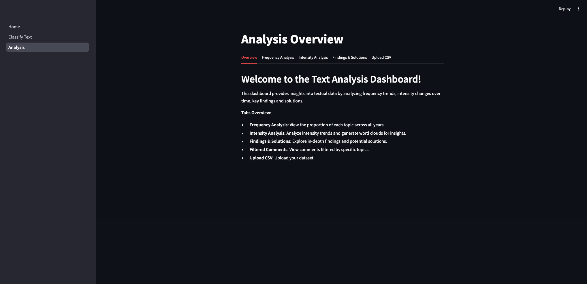
3.2 Upload CSV Tab¶
This tab allows users to upload a CSV file with text data, formatted to meet the tool's input requirements. Key fields should include timestamp, comment text, and relevant metadata, such as user engagement or subreddit categorization. Once uploaded, the data is preprocessed and analyzed to generate metrics for frequency and intensity analyses.
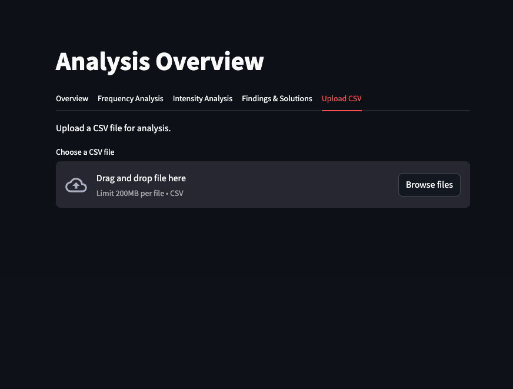
3.3 Frequency Analysis Tab¶
The Frequency Analysis tab displays the proportions of each of the 13 topics identified through topic modeling over selected years, offering insights into the distribution and prominence of topics and how their prevalence in hateful or toxic language has changed over time.
To the right of the bar graph, users can customize the visualization with the following options:
Year and Topic Selection: Users can select specific years or view data across all years and focus on particular topics or include all 13 topics.
Color Palette Customisation: Adjust the color palette for easier distinction between topics and personalized display preferences.
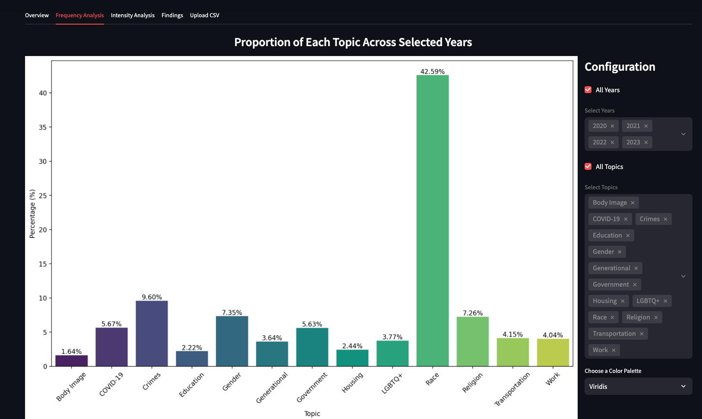
3.4 Intensity Analysis Tab¶
The Intensity Analysis section delves into how the intensity of toxic or hateful language has evolved, featuring multiple visualizations for detailed examination.
3.4.1 Net Trend Visualization¶
This tab provides a graphical view of overall trends in hate and toxic speech intensity over time for the most frequent topics: Race, Crimes, and Gender. It highlights periods of increased or decreased intensity, offering a broader perspective on underlying trends.
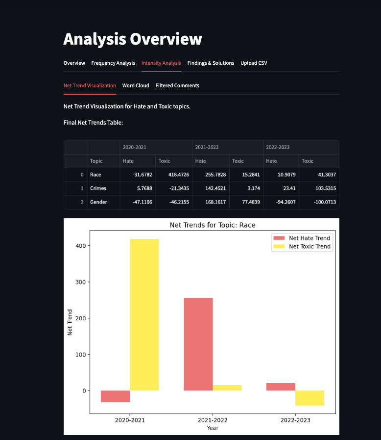
3.4.2 Word Cloud¶
This tab presents a word cloud, visually displaying the most frequent subjects within the top three topics: Race, Crime, and Gender. Words appear in proportion to their frequency, emphasizing key subjects often associated with high levels of hatefulness and toxicity.
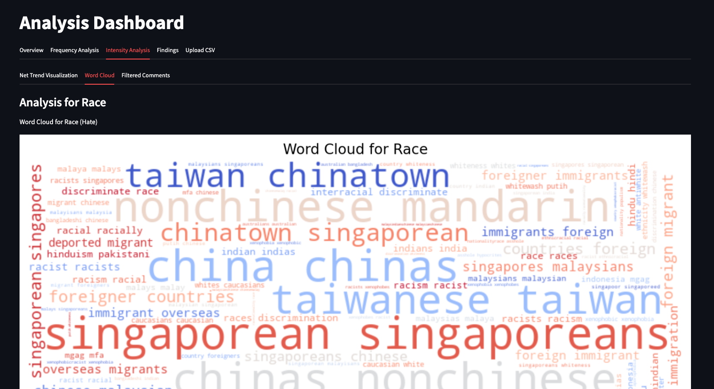
3.4.3 Filtered Comments¶
This tab displays a list of selected comments within the top three topics: Race, Crimes, and Gender, categorized by hate and toxicity. Users can select from a dropdown to view comments in any of the six categories: Race Hate, Race Toxic, Crimes Hate, Crimes Toxic, Gender Hate, and Gender Toxic.
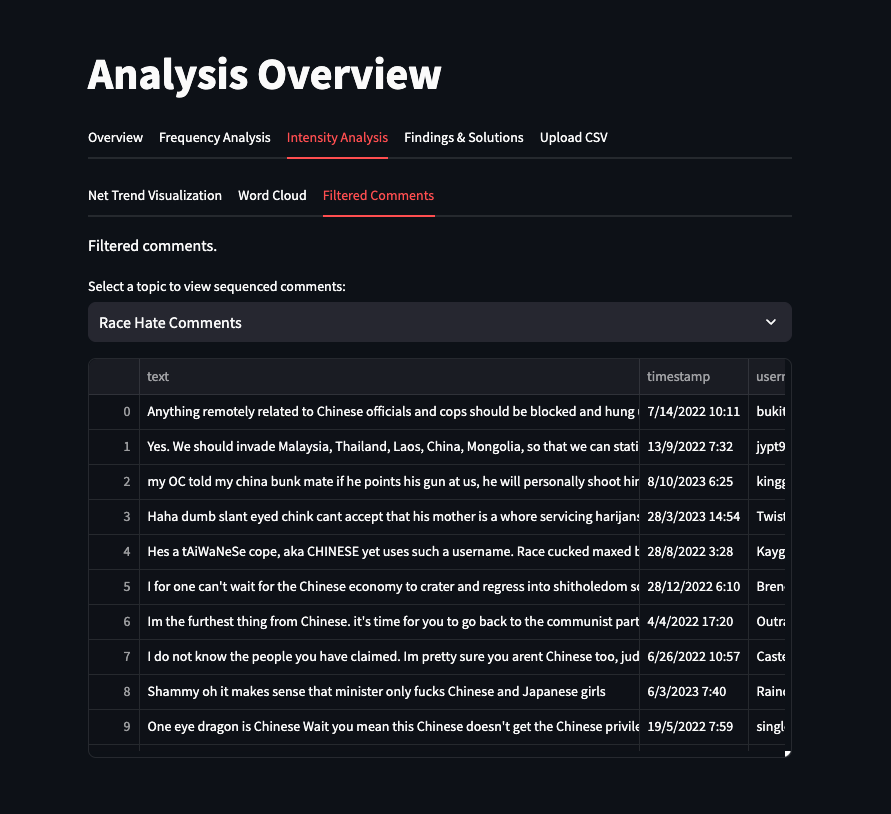
3.5 Findings Tab¶
The Findings tab summarizes key insights from the analysis, focusing on the top three topics—Race, Crimes, and Gender—which show heightened levels of hatefulness and toxicity. This section provides a detailed view of how these topics have been discussed in Singapore-related subreddits, highlighting trends and nuances within each topic's toxicity.
Key features of this tab include:
Personalized Filtering: Users can filter findings by comment type, and a keyword search function allows for pinpointing specific terms within the findings, facilitating targeted exploration of toxic or hateful language.
Key Insights: etailed insights are provided across six categories: Race Hate, Race Toxic, Crimes Hate, Crimes Toxic, Gender Hate, and Gender Toxic, offering a deeper understanding of each category's context.
These findings offer a comprehensive view of the hate and toxic speech landscape, illustrating sentiment evolution and identifying primary areas of concern.
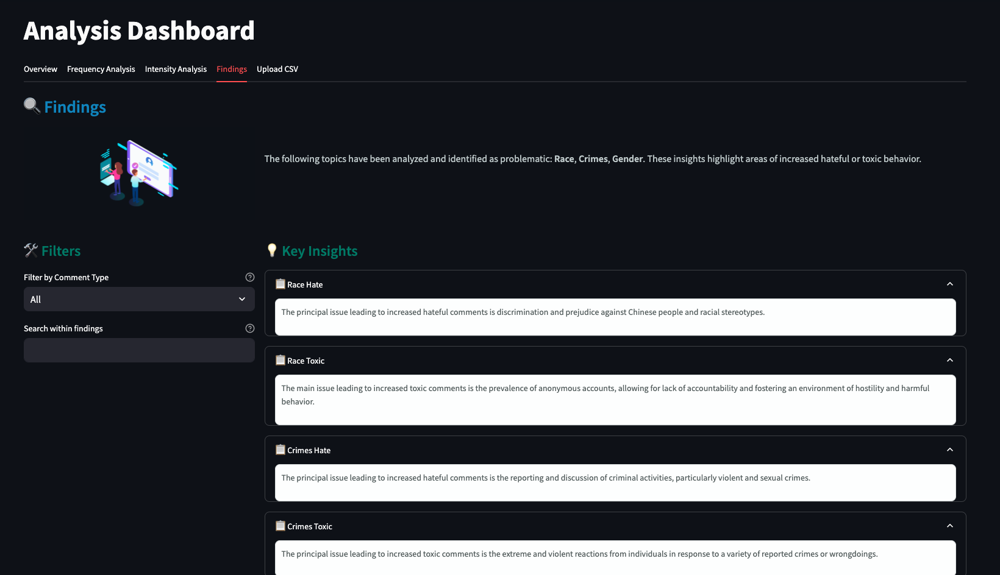